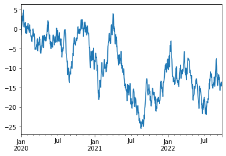
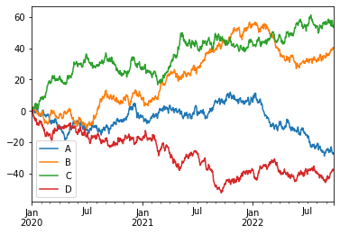

Pandas
Pandas概览
Pandas 是 Python 的核心数据分析支持库，提供了快速、灵活、明确的数据结构，旨在简单、直观地处理关系型、标记型数据。Pandas 的目标是成为 Python 数据分析实践与实战的必备高级工具，其长远目标是成为最强大、最灵活、可以支持任何语言的开源数据分析工具。经过多年不懈的努力，Pandas 离这个目标已经越来越近了。
Pandas 适用于处理以下类型的数据：
- 与 SQL 或 Excel 表类似的，含异构列的表格数据;
- 有序和无序（非固定频率）的时间序列数据;
- 带行列标签的矩阵数据，包括同构或异构型数据;
- 任意其它形式的观测、统计数据集, 数据转入 Pandas 数据结构时不必事先标记。
Pandas 的主要数据结构是 Series（一维数据）与 DataFrame（二维数据），这两种数据结构足以处理金融、统计、- 社会科学、工程等领域里的大多数典型用例。对于 R 用户，DataFrame 提供了比 R 语言 data.frame 更丰富的功能。Pandas 基于 NumPy 开发，可以与其它第三方科学计算支持库完美集成。
Pandas 就像一把万能瑞士军刀，下面仅列出了它的部分优势 ：
- 处理浮点与非浮点数据里的缺失数据，表示为 NaN；
- 大小可变：插入或删除 DataFrame 等多维对象的列；
- 自动、显式数据对齐：显式地将对象与一组标签对齐，也可以忽略标签，在 Series、DataFrame 计算时自动与数据对齐；
- 强大、灵活的分组（group by）功能：拆分-应用-组合数据集，聚合、转换数据；
- 把 Python 和 NumPy 数据结构里不规则、不同索引的数据轻松地转换为 DataFrame 对象；
- 基于智能标签，对大型数据集进行切片、花式索引、子集分解等操作；
- 直观地合并（merge）、连接（join）数据集；
- 灵活地重塑（reshape）、透视（pivot）数据集；
- 轴支持结构化标签：一个刻度支持多个标签；
- 成熟的 IO 工具：读取文本文件（CSV 等支持分隔符的文件）、Excel 文件、数据库等来源的数据，利用超快的 HDF5 格式保存 / 加载数据；
- 时间序列：支持日期范围生成、频率转换、移动窗口统计、移动窗口线性回归、日期位移等时间序列功能。
这些功能主要是为了解决其它编程语言、科研环境的痛点。处理数据一般分为几个阶段：数据整理与清洗、数据分析与建模、数据可视化与制表，Pandas 是处理数据的理想工具。
其它说明：
- Pandas 速度很快。Pandas 的很多底层算法都用 Cython 优化过。然而，为了保持通用性，必然要牺牲一些性能，如果专注某一功能，完全可以开发出比 Pandas 更快的专用工具。
- Pandas 是 statsmodels 的依赖项，因此，Pandas 也是 Python 中统计计算生态系统的重要组成部分。
- Pandas 已广泛应用于金融领域。
数据结构
| 维数 | 名称 | 描述 |
|---|---|---|
| 1 | Series | 带标签的一维同构数组 |
| 2 | DataFrame | 带标签的，大小可变的，二维异构表格 |
为什么有多个数据结构？
Pandas 数据结构就像是低维数据的容器。比如，DataFrame 是 Series 的容器，Series 则是标量的容器。使用这种方式，可以在容器中以字典的形式插入或删除对象。
此外，通用 API 函数的默认操作要顾及时间序列与截面数据集的方向。多维数组存储二维或三维数据时，编写函数要注意数据集的方向，这对用户来说是一种负担；如果不考虑 C 或 Fortran 中连续性对性能的影响，一般情况下，不同的轴在程序里其实没有什么区别。Pandas 里，轴的概念主要是为了给数据赋予更直观的语义，即用“更恰当”的方式表示数据集的方向。这样做可以让用户编写数据转换函数时，少费点脑子。
处理 DataFrame 等表格数据时，index（行）或 columns（列）比 axis 0 和 axis 1 更直观。用这种方式迭代 DataFrame 的列，代码更易读易懂：
for col in df.columns:
series = df[col]
# do something with series
大小可变与数据复制
Pandas 所有数据结构的值都是可变的，但数据结构的大小并非都是可变的，比如，Series 的长度不可改变，但 DataFrame 里就可以插入列。
Pandas 里，绝大多数方法都不改变原始的输入数据，而是复制数据，生成新的对象。 一般来说，原始输入数据不变更稳妥。
十分钟入门Pandas
本节是帮助 Pandas 新手快速上手的简介。烹饪指南里介绍了更多实用案例。
本节以下列方式导入 Pandas 与 NumPy：
import numpy as np
import pandas as pd
生成对象
详见数据结构简介文档。
用值列表生成 Series 时，Pandas 默认自动生成整数索引：
s = pd.Series([1, 2, 3, 4, 5, np.nan, 6, 8])
s
0 1.0
1 2.0
2 3.0
3 4.0
4 5.0
5 NaN
6 6.0
7 8.0
dtype: float64
用含日期时间索引与标签的Numpy数组生成DataFrame
df1 = pd.date_range(start='20150101', periods=6)
df1
DatetimeIndex(['2015-01-01', '2015-01-02', '2015-01-03', '2015-01-04',
'2015-01-05', '2015-01-06'],
dtype='datetime64[ns]', freq='D')
df2 = pd.DataFrame(np.random.randn(6, 4), index=df1, columns=list('ABCD'))
df2
| A | B | C | D | |
|---|---|---|---|---|
| 2015-01-01 | 0.495777 | -0.524296 | -0.089971 | 1.640044 |
| 2015-01-02 | 2.014452 | -0.422936 | 0.991045 | -0.281331 |
| 2015-01-03 | 0.883596 | -1.794803 | 0.575979 | -1.856528 |
| 2015-01-04 | 0.565125 | 0.858778 | 0.138376 | 0.201316 |
| 2015-01-05 | -1.854077 | 0.368956 | -1.267826 | -2.464888 |
| 2015-01-06 | -0.224993 | -1.253118 | -0.195717 | -0.623797 |
用Series字典对象生成DataFrame
df3 = pd.DataFrame({
'A': 1.,
'B': pd.Timestamp('20150101'),
'C': pd.Series(1, index=list(range(4)), dtype='float32'),
'D': np.array([3] * 4, dtype='int32'),
'E': pd.Categorical(['test', 'train', 'test', 'train']),
'F': 'foo'
})
df3
| A | B | C | D | E | F | |
|---|---|---|---|---|---|---|
| 0 | 1.0 | 2015-01-01 | 1.0 | 3 | test | foo |
| 1 | 1.0 | 2015-01-01 | 1.0 | 3 | train | foo |
| 2 | 1.0 | 2015-01-01 | 1.0 | 3 | test | foo |
| 3 | 1.0 | 2015-01-01 | 1.0 | 3 | train | foo |
DataFrame 的列有不同数据类型。
df3.dtypes
A float64
B datetime64[ns]
C float32
D int32
E category
F object
dtype: object
IPython支持 tab 键自动补全列名与公共属性。下面是部分可自动补全的属性：
df3. < TAB >
# df2.A df2.bool
# df2.abs df2.boxplot
# df2.add df2.C
# df2.add_prefix df2.clip
# df2.add_suffix df2.clip_lower
# df2.align df2.clip_upper
# df2.all df2.columns
# df2.any df2.combine
# df2.append df2.combine_first
# df2.apply df2.compound
# df2.applymap df2.consolidate
# df2.D
# 列 A、B、C、D 和 E 都可以自动补全；为简洁起见，此处只显示了部分属性。
File "<ipython-input-16-fe6086829f7d>", line 1
df3.<TAB>
^
SyntaxError: invalid syntax
查看数据
详见基础用法文档。
下列代码说明如何查看 DataFrame 头部和尾部数据：
df2.head()
| A | B | C | D | |
|---|---|---|---|---|
| 2015-01-01 | 0.495777 | -0.524296 | -0.089971 | 1.640044 |
| 2015-01-02 | 2.014452 | -0.422936 | 0.991045 | -0.281331 |
| 2015-01-03 | 0.883596 | -1.794803 | 0.575979 | -1.856528 |
| 2015-01-04 | 0.565125 | 0.858778 | 0.138376 | 0.201316 |
| 2015-01-05 | -1.854077 | 0.368956 | -1.267826 | -2.464888 |
df2.tail(3)
| A | B | C | D | |
|---|---|---|---|---|
| 2015-01-04 | 0.565125 | 0.858778 | 0.138376 | 0.201316 |
| 2015-01-05 | -1.854077 | 0.368956 | -1.267826 | -2.464888 |
| 2015-01-06 | -0.224993 | -1.253118 | -0.195717 | -0.623797 |
显示索引与列名
df2.index
DatetimeIndex(['2015-01-01', '2015-01-02', '2015-01-03', '2015-01-04',
'2015-01-05', '2015-01-06'],
dtype='datetime64[ns]', freq='D')
df2.columns
Index(['A', 'B', 'C', 'D'], dtype='object')
DataFrame.to_numpy()
输出底层数据的 NumPy 对象。注意，DataFrame 的列由多种数据类型组成时，该操作耗费系统资源较大，这也是 Pandas 和 NumPy 的本质区别：NumPy 数组只有一种数据类型，DataFrame
每列的数据类型各不相同。调用 DataFrame.to_numpy() 时，Pandas 查找支持 DataFrame 里所有数据类型的 NumPy 数据类型。还有一种数据类型是 object，可以把 DataFrame
列里的值强制转换为 Python 对象。
下面的 df2 这个 DataFrame 里的值都是浮点数，DataFrame.to_numpy() 的操作会很快，而且不复制数据。
df2.to_numpy()
array([[ 0.49577653, -0.5242963 , -0.08997072, 1.64004361],
[ 2.01445165, -0.42293604, 0.99104484, -0.28133103],
[ 0.88359618, -1.79480302, 0.57597891, -1.85652831],
[ 0.56512531, 0.85877834, 0.13837606, 0.20131605],
[-1.85407664, 0.36895609, -1.26782639, -2.46488774],
[-0.22499319, -1.25311828, -0.19571662, -0.62379678]])
df3 这个 DataFrame 包含了多种类型，DataFrame.to_numpy() 操作就会耗费较多资源。
df3.to_numpy()
array([[1.0, Timestamp('2015-01-01 00:00:00'), 1.0, 3, 'test', 'foo'],
[1.0, Timestamp('2015-01-01 00:00:00'), 1.0, 3, 'train', 'foo'],
[1.0, Timestamp('2015-01-01 00:00:00'), 1.0, 3, 'test', 'foo'],
[1.0, Timestamp('2015-01-01 00:00:00'), 1.0, 3, 'train', 'foo']],
dtype=object)
提醒： DataFrame.to_numpy() 的输出不包含行索引和列标签。
describe() 可以快速查看数据的统计摘要：
df2.describe()
| A | B | C | D | |
|---|---|---|---|---|
| count | 6.000000 | 6.000000 | 6.000000 | 6.000000 |
| mean | 0.313313 | -0.461237 | 0.025314 | -0.564197 |
| std | 1.288654 | 0.984132 | 0.772400 | 1.470442 |
| min | -1.854077 | -1.794803 | -1.267826 | -2.464888 |
| 25% | -0.044801 | -1.070913 | -0.169280 | -1.548345 |
| 50% | 0.530451 | -0.473616 | 0.024203 | -0.452564 |
| 75% | 0.803978 | 0.170983 | 0.466578 | 0.080654 |
| max | 2.014452 | 0.858778 | 0.991045 | 1.640044 |
转置数据：
print(df2)
print("\n-------------------转置后-------------------------")
df2.T
A B C D
2015-01-01 0.495777 -0.524296 -0.089971 1.640044
2015-01-02 2.014452 -0.422936 0.991045 -0.281331
2015-01-03 0.883596 -1.794803 0.575979 -1.856528
2015-01-04 0.565125 0.858778 0.138376 0.201316
2015-01-05 -1.854077 0.368956 -1.267826 -2.464888
2015-01-06 -0.224993 -1.253118 -0.195717 -0.623797
-------------------转置后-------------------------
| 2015-01-01 | 2015-01-02 | 2015-01-03 | 2015-01-04 | 2015-01-05 | 2015-01-06 | |
|---|---|---|---|---|---|---|
| A | 0.495777 | 2.014452 | 0.883596 | 0.565125 | -1.854077 | -0.224993 |
| B | -0.524296 | -0.422936 | -1.794803 | 0.858778 | 0.368956 | -1.253118 |
| C | -0.089971 | 0.991045 | 0.575979 | 0.138376 | -1.267826 | -0.195717 |
| D | 1.640044 | -0.281331 | -1.856528 | 0.201316 | -2.464888 | -0.623797 |
按轴排序：
df2.sort_index(axis=1, ascending=False)
| D | C | B | A | |
|---|---|---|---|---|
| 2015-01-01 | 1.640044 | -0.089971 | -0.524296 | 0.495777 |
| 2015-01-02 | -0.281331 | 0.991045 | -0.422936 | 2.014452 |
| 2015-01-03 | -1.856528 | 0.575979 | -1.794803 | 0.883596 |
| 2015-01-04 | 0.201316 | 0.138376 | 0.858778 | 0.565125 |
| 2015-01-05 | -2.464888 | -1.267826 | 0.368956 | -1.854077 |
| 2015-01-06 | -0.623797 | -0.195717 | -1.253118 | -0.224993 |
按值排序：
df2.sort_values(by='B')
| A | B | C | D | |
|---|---|---|---|---|
| 2015-01-03 | 0.883596 | -1.794803 | 0.575979 | -1.856528 |
| 2015-01-06 | -0.224993 | -1.253118 | -0.195717 | -0.623797 |
| 2015-01-01 | 0.495777 | -0.524296 | -0.089971 | 1.640044 |
| 2015-01-02 | 2.014452 | -0.422936 | 0.991045 | -0.281331 |
| 2015-01-05 | -1.854077 | 0.368956 | -1.267826 | -2.464888 |
| 2015-01-04 | 0.565125 | 0.858778 | 0.138376 | 0.201316 |
选择
提醒：
选择、设置标准 Python / Numpy 的表达式已经非常直观，交互也很方便，但对于生产代码，我们还是推荐优化过的 Pandas 数据访问方法：.at、.iat、.loc 和 .iloc。
获取数据
选择单列，产生Series，与df2.A等效：
df2['A']
2015-01-01 0.495777
2015-01-02 2.014452
2015-01-03 0.883596
2015-01-04 0.565125
2015-01-05 -1.854077
2015-01-06 -0.224993
Freq: D, Name: A, dtype: float64
用[]切片行：
df2[0:3]
| A | B | C | D | |
|---|---|---|---|---|
| 2015-01-01 | 0.495777 | -0.524296 | -0.089971 | 1.640044 |
| 2015-01-02 | 2.014452 | -0.422936 | 0.991045 | -0.281331 |
| 2015-01-03 | 0.883596 | -1.794803 | 0.575979 | -1.856528 |
df2['20150102': '20150103']
| A | B | C | D | |
|---|---|---|---|---|
| 2015-01-02 | 2.014452 | -0.422936 | 0.991045 | -0.281331 |
| 2015-01-03 | 0.883596 | -1.794803 | 0.575979 | -1.856528 |
按标签选择
详见按标签选择
用标签提取一行数据：
df2.loc[df1[0]]
A 0.495777
B -0.524296
C -0.089971
D 1.640044
Name: 2015-01-01 00:00:00, dtype: float64
用标签选择多列数据：
df2.loc[:, ['A', 'B']]
| A | B | |
|---|---|---|
| 2015-01-01 | 0.495777 | -0.524296 |
| 2015-01-02 | 2.014452 | -0.422936 |
| 2015-01-03 | 0.883596 | -1.794803 |
| 2015-01-04 | 0.565125 | 0.858778 |
| 2015-01-05 | -1.854077 | 0.368956 |
| 2015-01-06 | -0.224993 | -1.253118 |
用标签切片，包含行与列结束点：
df2.loc['20150102': '20150104', ['A', 'B']]
| A | B | |
|---|---|---|
| 2015-01-02 | 2.014452 | -0.422936 |
| 2015-01-03 | 0.883596 | -1.794803 |
| 2015-01-04 | 0.565125 | 0.858778 |
返回对象降维：
df2.loc['20150102', ['A', 'B']]
A 2.014452
B -0.422936
Name: 2015-01-02 00:00:00, dtype: float64
提取标量值：
df2.loc[df1[0], 'A']
0.4957765303321702
快速访问标量，与上述方法等效
df2.at[df1[0], 'A']
0.4957765303321702
按位置选择
详见按位置选择
用整数位置选择：
df2.iloc[3]
A 0.565125
B 0.858778
C 0.138376
D 0.201316
Name: 2015-01-04 00:00:00, dtype: float64
类似Numpy/Python，用整数切片
df2.iloc[3:5, 0:2]
| A | B | |
|---|---|---|
| 2015-01-04 | 0.565125 | 0.858778 |
| 2015-01-05 | -1.854077 | 0.368956 |
类型Numpy/Python，用整数列表按位置切片：
df2.iloc[[1, 2, 4], [0, 2]]
| A | C | |
|---|---|---|
| 2015-01-02 | 2.014452 | 0.991045 |
| 2015-01-03 | 0.883596 | 0.575979 |
| 2015-01-05 | -1.854077 | -1.267826 |
显式整行切片
df2.iloc[1:3, :]
| A | B | C | D | |
|---|---|---|---|---|
| 2015-01-02 | 2.014452 | -0.422936 | 0.991045 | -0.281331 |
| 2015-01-03 | 0.883596 | -1.794803 | 0.575979 | -1.856528 |
显式整列切片：
df2.iloc[:, 1:3]
| B | C | |
|---|---|---|
| 2015-01-01 | -0.524296 | -0.089971 |
| 2015-01-02 | -0.422936 | 0.991045 |
| 2015-01-03 | -1.794803 | 0.575979 |
| 2015-01-04 | 0.858778 | 0.138376 |
| 2015-01-05 | 0.368956 | -1.267826 |
| 2015-01-06 | -1.253118 | -0.195717 |
显式提取值：
df2.iloc[1, 1]
-0.4229360414145462
快速访问标量，与上述方法等效：
df2.iat[1, 1]
-0.4229360414145462
布尔索引
用单列的值选择数据：
df2[df2.A > 0]
| A | B | C | D | |
|---|---|---|---|---|
| 2015-01-01 | 0.495777 | -0.524296 | -0.089971 | 1.640044 |
| 2015-01-02 | 2.014452 | -0.422936 | 0.991045 | -0.281331 |
| 2015-01-03 | 0.883596 | -1.794803 | 0.575979 | -1.856528 |
| 2015-01-04 | 0.565125 | 0.858778 | 0.138376 | 0.201316 |
选择DataFrame里满足条件的值：
df2[df2 > 0]
| A | B | C | D | |
|---|---|---|---|---|
| 2015-01-01 | 0.495777 | NaN | NaN | 1.640044 |
| 2015-01-02 | 2.014452 | NaN | 0.991045 | NaN |
| 2015-01-03 | 0.883596 | NaN | 0.575979 | NaN |
| 2015-01-04 | 0.565125 | 0.858778 | 0.138376 | 0.201316 |
| 2015-01-05 | NaN | 0.368956 | NaN | NaN |
| 2015-01-06 | NaN | NaN | NaN | NaN |
用isin()筛选：
df4 = df2.copy()
df4['E'] = ['one', 'two', 'three', 'four', 'three', 'one']
df4
| A | B | C | D | E | |
|---|---|---|---|---|---|
| 2015-01-01 | 0.495777 | -0.524296 | -0.089971 | 1.640044 | one |
| 2015-01-02 | 2.014452 | -0.422936 | 0.991045 | -0.281331 | two |
| 2015-01-03 | 0.883596 | -1.794803 | 0.575979 | -1.856528 | three |
| 2015-01-04 | 0.565125 | 0.858778 | 0.138376 | 0.201316 | four |
| 2015-01-05 | -1.854077 | 0.368956 | -1.267826 | -2.464888 | three |
| 2015-01-06 | -0.224993 | -1.253118 | -0.195717 | -0.623797 | one |
df4[df4['E'].isin(['two', 'four'])]
| A | B | C | D | E | |
|---|---|---|---|---|---|
| 2015-01-02 | 2.014452 | -0.422936 | 0.991045 | -0.281331 | two |
| 2015-01-04 | 0.565125 | 0.858778 | 0.138376 | 0.201316 | four |
赋值
用索引自动对齐新增列的数据：
s1 = pd.Series([1, 2, 3, 4, 5, 6], index=pd.date_range('20150101', periods=6))
df2['F'] = s1
print(df2)
A B C D F
2015-01-01 0.495777 -0.524296 -0.089971 1.640044 1
2015-01-02 2.014452 -0.422936 0.991045 -0.281331 2
2015-01-03 0.883596 -1.794803 0.575979 -1.856528 3
2015-01-04 0.565125 0.858778 0.138376 0.201316 4
2015-01-05 -1.854077 0.368956 -1.267826 -2.464888 5
2015-01-06 -0.224993 -1.253118 -0.195717 -0.623797 6
按标签赋值：
df2.at[df1[0], 'A'] = 0
df2
| A | B | C | D | F | |
|---|---|---|---|---|---|
| 2015-01-01 | 0.000000 | -0.524296 | -0.089971 | 1.640044 | 1 |
| 2015-01-02 | 2.014452 | -0.422936 | 0.991045 | -0.281331 | 2 |
| 2015-01-03 | 0.883596 | -1.794803 | 0.575979 | -1.856528 | 3 |
| 2015-01-04 | 0.565125 | 0.858778 | 0.138376 | 0.201316 | 4 |
| 2015-01-05 | -1.854077 | 0.368956 | -1.267826 | -2.464888 | 5 |
| 2015-01-06 | -0.224993 | -1.253118 | -0.195717 | -0.623797 | 6 |
按位置赋值：
df2.iat[0, 1] = 0
df2
| A | B | C | D | F | |
|---|---|---|---|---|---|
| 2015-01-01 | 0.000000 | 0.000000 | -0.089971 | 1.640044 | 1 |
| 2015-01-02 | 2.014452 | -0.422936 | 0.991045 | -0.281331 | 2 |
| 2015-01-03 | 0.883596 | -1.794803 | 0.575979 | -1.856528 | 3 |
| 2015-01-04 | 0.565125 | 0.858778 | 0.138376 | 0.201316 | 4 |
| 2015-01-05 | -1.854077 | 0.368956 | -1.267826 | -2.464888 | 5 |
| 2015-01-06 | -0.224993 | -1.253118 | -0.195717 | -0.623797 | 6 |
按Numpy数组赋值：
df2.loc[:, "D"] = np.array([5] * len(df2))
df2
| A | B | C | D | F | |
|---|---|---|---|---|---|
| 2015-01-01 | 0.000000 | 0.000000 | -0.089971 | 5 | 1 |
| 2015-01-02 | 2.014452 | -0.422936 | 0.991045 | 5 | 2 |
| 2015-01-03 | 0.883596 | -1.794803 | 0.575979 | 5 | 3 |
| 2015-01-04 | 0.565125 | 0.858778 | 0.138376 | 5 | 4 |
| 2015-01-05 | -1.854077 | 0.368956 | -1.267826 | 5 | 5 |
| 2015-01-06 | -0.224993 | -1.253118 | -0.195717 | 5 | 6 |
用where条件赋值：
- 签名
DataFrame.where()不同于numpy.where()。大致相当于。df1.where(m, df2)``````np.where(m, df1, df2)
df5 = df2.copy()
df5[df5 > 0] = -df5
df5
| A | B | C | D | F | |
|---|---|---|---|---|---|
| 2015-01-01 | 0.000000 | 0.000000 | -0.089971 | -5 | -1 |
| 2015-01-02 | -2.014452 | -0.422936 | -0.991045 | -5 | -2 |
| 2015-01-03 | -0.883596 | -1.794803 | -0.575979 | -5 | -3 |
| 2015-01-04 | -0.565125 | -0.858778 | -0.138376 | -5 | -4 |
| 2015-01-05 | -1.854077 | -0.368956 | -1.267826 | -5 | -5 |
| 2015-01-06 | -0.224993 | -1.253118 | -0.195717 | -5 | -6 |
缺失值
Pandas 主要用 np.nan 表示缺失数据。
计算时，默认不包含空值。详见缺失数据。
重建索引（reindex）可以更改、添加、删除指定轴的索引，并返回数据副本，即不更改原数据。
df6 = df2.reindex(index=df1[0:4], columns=list(df2.columns) + ['E'])
df6.loc[df1[0]:df1[1], 'E'] = 1
df6
| A | B | C | D | F | E | |
|---|---|---|---|---|---|---|
| 2015-01-01 | 0.000000 | 0.000000 | -0.089971 | 5 | 1 | 1.0 |
| 2015-01-02 | 2.014452 | -0.422936 | 0.991045 | 5 | 2 | 1.0 |
| 2015-01-03 | 0.883596 | -1.794803 | 0.575979 | 5 | 3 | NaN |
| 2015-01-04 | 0.565125 | 0.858778 | 0.138376 | 5 | 4 | NaN |
删除所有含缺失值得行：
df6.dropna(how='any')
| A | B | C | D | F | E | |
|---|---|---|---|---|---|---|
| 2015-01-01 | 0.000000 | 0.000000 | -0.089971 | 5 | 1 | 1.0 |
| 2015-01-02 | 2.014452 | -0.422936 | 0.991045 | 5 | 2 | 1.0 |
填充缺失值：
df6.fillna(value=4)
| A | B | C | D | F | E | |
|---|---|---|---|---|---|---|
| 2015-01-01 | 0.000000 | 0.000000 | -0.089971 | 5 | 1 | 1.0 |
| 2015-01-02 | 2.014452 | -0.422936 | 0.991045 | 5 | 2 | 1.0 |
| 2015-01-03 | 0.883596 | -1.794803 | 0.575979 | 5 | 3 | 4.0 |
| 2015-01-04 | 0.565125 | 0.858778 | 0.138376 | 5 | 4 | 4.0 |
提取nan值得布尔掩码：
pd.isna(df6)
| A | B | C | D | F | E | |
|---|---|---|---|---|---|---|
| 2015-01-01 | False | False | False | False | False | False |
| 2015-01-02 | False | False | False | False | False | False |
| 2015-01-03 | False | False | False | False | False | True |
| 2015-01-04 | False | False | False | False | False | True |
运算
详见二进制操作
统计
一般情况下，运算时排除缺失值。
描述性统计：
df2.mean()
A 0.230684
B -0.373854
C 0.025314
D 5.000000
F 3.500000
dtype: float64
在另一个轴(即,行)上执行同样的操作：
df2.mean(1)
2015-01-01 1.182006
2015-01-02 1.916512
2015-01-03 1.532954
2015-01-04 2.112456
2015-01-05 1.449411
2015-01-06 1.865234
Freq: D, dtype: float64
不同维度对象运算时，要先对齐。此外，Pandas自动沿指定维度广播。
s2 = pd.Series([1, 3, 5, np.nan, 6, 8], index=df1).shift(2)
s2
2015-01-01 NaN
2015-01-02 NaN
2015-01-03 1.0
2015-01-04 3.0
2015-01-05 5.0
2015-01-06 NaN
Freq: D, dtype: float64
df2.sub(s2, axis='index')
| A | B | C | D | F | |
|---|---|---|---|---|---|
| 2015-01-01 | NaN | NaN | NaN | NaN | NaN |
| 2015-01-02 | NaN | NaN | NaN | NaN | NaN |
| 2015-01-03 | -0.116404 | -2.794803 | -0.424021 | 4.0 | 2.0 |
| 2015-01-04 | -2.434875 | -2.141222 | -2.861624 | 2.0 | 1.0 |
| 2015-01-05 | -6.854077 | -4.631044 | -6.267826 | 0.0 | 0.0 |
| 2015-01-06 | NaN | NaN | NaN | NaN | NaN |
Apply函数
Apply函数处理数据
df2.apply(np.cumsum)
| A | B | C | D | F | |
|---|---|---|---|---|---|
| 2015-01-01 | 0.000000 | 0.000000 | -0.089971 | 5 | 1 |
| 2015-01-02 | 2.014452 | -0.422936 | 0.901074 | 10 | 3 |
| 2015-01-03 | 2.898048 | -2.217739 | 1.477053 | 15 | 6 |
| 2015-01-04 | 3.463173 | -1.358961 | 1.615429 | 20 | 10 |
| 2015-01-05 | 1.609096 | -0.990005 | 0.347603 | 25 | 15 |
| 2015-01-06 | 1.384103 | -2.243123 | 0.151886 | 30 | 21 |
df2.apply(lambda x: x.max() - x.min())
A 3.868528
B 2.653581
C 2.258871
D 0.000000
F 5.000000
dtype: float64
直方图
详见直方图与离散化。
s3 = pd.Series(np.random.randint(0, 7, size=10))
s3
0 6
1 3
2 4
3 0
4 2
5 3
6 1
7 6
8 4
9 3
dtype: int32
s3.value_counts()
3 3
6 2
4 2
2 1
1 1
0 1
dtype: int64
字符串方法
Series 的 str 属性包含一组字符串处理功能，如下列代码所示。注意，str
的模式匹配默认使用正则表达式。详见矢量字符串方法。
s4 = pd.Series(['A', 'B', 'C', 'Aaba', 'Baca', np.nan, 'CABA', 'dog', 'cat'])
s4.str.lower()
0 a
1 b
2 c
3 aaba
4 baca
5 NaN
6 caba
7 dog
8 cat
dtype: object
合并（Merge）
结合（Concat）
Pandas 提供了多种将 Series、DataFrame 对象组合在一起的功能，用索引与关联代数功能的多种设置逻辑可执行连接（join）与合并（merge）操作。
详见合并。
concat() 用于连接 Pandas 对象：
df7 = pd.DataFrame(np.random.randn(10, 4))
df7
| 0 | 1 | 2 | 3 | |
|---|---|---|---|---|
| 0 | 0.510118 | 1.297539 | -0.226940 | -1.298777 |
| 1 | -0.156357 | -0.501054 | -0.884452 | -0.642022 |
| 2 | -0.084234 | 0.522088 | 0.559494 | 0.614627 |
| 3 | -1.877422 | 1.173498 | -0.590322 | 1.283285 |
| 4 | 0.599235 | -0.459644 | -0.991115 | 0.602145 |
| 5 | -0.918474 | 1.273175 | 0.391105 | 1.760057 |
| 6 | 1.454607 | 0.301366 | 0.569512 | -0.853014 |
| 7 | 0.533967 | 2.432820 | -0.116690 | -1.042676 |
| 8 | 0.788732 | 0.988278 | -0.317310 | -0.555627 |
| 9 | 0.717240 | -0.003718 | 2.191069 | 1.661000 |
# 分解为多组
pieces = [df7[:3], df7[3:7], df7[7:]]
pd.concat(pieces)
| 0 | 1 | 2 | 3 | |
|---|---|---|---|---|
| 0 | 0.510118 | 1.297539 | -0.226940 | -1.298777 |
| 1 | -0.156357 | -0.501054 | -0.884452 | -0.642022 |
| 2 | -0.084234 | 0.522088 | 0.559494 | 0.614627 |
| 3 | -1.877422 | 1.173498 | -0.590322 | 1.283285 |
| 4 | 0.599235 | -0.459644 | -0.991115 | 0.602145 |
| 5 | -0.918474 | 1.273175 | 0.391105 | 1.760057 |
| 6 | 1.454607 | 0.301366 | 0.569512 | -0.853014 |
| 7 | 0.533967 | 2.432820 | -0.116690 | -1.042676 |
| 8 | 0.788732 | 0.988278 | -0.317310 | -0.555627 |
| 9 | 0.717240 | -0.003718 | 2.191069 | 1.661000 |
连接（join）
SQL 风格的合并。 详见数据库风格连接。
left = pd.DataFrame({'key': ['foo', 'foo'], 'lval': [1, 2]})
right = pd.DataFrame({'key': ['foo', 'foo'], 'rval': [4, 5]})
print(left)
print('-------------------')
print(right)
key lval
0 foo 1
1 foo 2
-------------------
key rval
0 foo 4
1 foo 5
pd.merge(left, right, on='key')
| key | lval | rval | |
|---|---|---|---|
| 0 | foo | 1 | 4 |
| 1 | foo | 1 | 5 |
| 2 | foo | 2 | 4 |
| 3 | foo | 2 | 5 |
还有一个例子：
left = pd.DataFrame({'key': ['foo', 'bar'], 'lval': [1, 2]})
right = pd.DataFrame({'key': ['foo', 'bar'], 'rval': [4, 5]})
print(left)
print('-------------------')
print(right)
key lval
0 foo 1
1 bar 2
-------------------
key rval
0 foo 4
1 bar 5
pd.merge(left, right, on='key')
| key | lval | rval | |
|---|---|---|---|
| 0 | foo | 1 | 4 |
| 1 | bar | 2 | 5 |
追加（Append）
为 DataFrame 追加行。详见追加文档。
df = pd.DataFrame(np.random.randn(8, 4), columns=['A', 'B', 'C', 'D'])
df
| A | B | C | D | |
|---|---|---|---|---|
| 0 | 0.288486 | 0.071832 | -0.573014 | -0.740909 |
| 1 | -0.437346 | -0.341157 | 0.652473 | 1.647469 |
| 2 | -0.041598 | 1.400381 | 0.034764 | 0.030222 |
| 3 | 0.269048 | 0.363632 | 1.939811 | 0.371858 |
| 4 | 1.135352 | -1.729701 | 1.319469 | 0.695883 |
| 5 | 0.024442 | 0.259727 | -0.255833 | -1.128733 |
| 6 | 1.310012 | 1.068041 | -0.961124 | 0.513195 |
| 7 | -0.811828 | 2.385519 | -0.211693 | -1.799050 |
s = df.iloc[3]
df.append(s, ignore_index=True)
| A | B | C | D | |
|---|---|---|---|---|
| 0 | 0.288486 | 0.071832 | -0.573014 | -0.740909 |
| 1 | -0.437346 | -0.341157 | 0.652473 | 1.647469 |
| 2 | -0.041598 | 1.400381 | 0.034764 | 0.030222 |
| 3 | 0.269048 | 0.363632 | 1.939811 | 0.371858 |
| 4 | 1.135352 | -1.729701 | 1.319469 | 0.695883 |
| 5 | 0.024442 | 0.259727 | -0.255833 | -1.128733 |
| 6 | 1.310012 | 1.068041 | -0.961124 | 0.513195 |
| 7 | -0.811828 | 2.385519 | -0.211693 | -1.799050 |
| 8 | 0.269048 | 0.363632 | 1.939811 | 0.371858 |
分组（Grouping）
“group by” 指的是涵盖下列一项或多项步骤的处理流程：
- 分割：按条件把数据分割成多组；
- 应用：为每组单独应用函数；
- 组合：将处理结果组合成一个数据结构。
df = pd.DataFrame({'A': ['foo', 'bar', 'foo', 'bar', 'foo', 'bar', 'foo', 'foo'],
'B': ['one', 'one', 'two', 'three', 'two', 'two', 'one', 'three'],
'C': np.random.randn(8), 'D': np.random.randn(8)})
df
| A | B | C | D | |
|---|---|---|---|---|
| 0 | foo | one | 1.039872 | 0.388262 |
| 1 | bar | one | -0.512593 | 1.288747 |
| 2 | foo | two | 2.751863 | -0.549265 |
| 3 | bar | three | 1.826074 | -0.152341 |
| 4 | foo | two | 0.565190 | 1.234779 |
| 5 | bar | two | -0.544772 | -1.006594 |
| 6 | foo | one | -0.232166 | 0.317457 |
| 7 | foo | three | 1.150941 | 0.672226 |
先分组，再用sum函数计算每组的汇总数据
df.groupby('A').sum()
| C | D | |
|---|---|---|
| A | ||
| bar | 0.768709 | 0.129812 |
| foo | 5.275699 | 2.063459 |
多列分组后，生成多层索引，也可以应用 sum 函数：
df.groupby(['A', 'B']).sum()
| C | D | ||
|---|---|---|---|
| A | B | ||
| bar | one | -0.512593 | 1.288747 |
| three | 1.826074 | -0.152341 | |
| two | -0.544772 | -1.006594 | |
| foo | one | 0.807705 | 0.705719 |
| three | 1.150941 | 0.672226 | |
| two | 3.317053 | 0.685514 |
重塑（Reshaping）
堆叠（Stack）
tuples = list(zip(*[['bar', 'bar', 'baz', 'baz', 'foo', 'foo', 'qux', 'qux'],
....: ['one', 'two', 'one', 'two', 'one', 'two', 'one', 'two']]))
index = pd.MultiIndex.from_tuples(tuples, names=['first', 'second'])
df = pd.DataFrame(np.random.randn(8, 2), index=index, columns=['A', 'B'])
df2 = df[:4]
print(df, df2, sep='\n' * 3)
A B
first second
bar one 1.192086 -1.617945
two -0.541903 -0.763716
baz one 0.002802 -0.073066
two 1.086178 0.505617
foo one 0.495192 -1.072288
two 0.447279 -1.292418
qux one -0.317342 -0.857073
two 0.452839 0.217488
A B
first second
bar one 1.192086 -1.617945
two -0.541903 -0.763716
baz one 0.002802 -0.073066
two 1.086178 0.505617
# stack()方法把 DataFrame 列压缩至一层
stacked = df2.stack()
stacked
first second
bar one A 1.192086
B -1.617945
two A -0.541903
B -0.763716
baz one A 0.002802
B -0.073066
two A 1.086178
B 0.505617
dtype: float64
# 压缩后的 DataFrame 或 Series 具有多层索引， stack() 的逆操作是 unstack()，默认为拆叠最后一层：
stacked.unstack()
| A | B | ||
|---|---|---|---|
| first | second | ||
| bar | one | 1.192086 | -1.617945 |
| two | -0.541903 | -0.763716 | |
| baz | one | 0.002802 | -0.073066 |
| two | 1.086178 | 0.505617 |
stacked.unstack(1)
| second | one | two | |
|---|---|---|---|
| first | |||
| bar | A | 1.192086 | -0.541903 |
| B | -1.617945 | -0.763716 | |
| baz | A | 0.002802 | 1.086178 |
| B | -0.073066 | 0.505617 |
stacked.unstack(0)
| first | bar | baz | |
|---|---|---|---|
| second | |||
| one | A | 1.192086 | 0.002802 |
| B | -1.617945 | -0.073066 | |
| two | A | -0.541903 | 1.086178 |
| B | -0.763716 | 0.505617 |
数据透视表（Pivot Tables）
详见数据透视表。
df = pd.DataFrame({'A': ['one', 'one', 'two', 'three'] * 3,
.....: 'B': ['A', 'B', 'C'] * 4,
.....: 'C': ['foo', 'foo', 'foo', 'bar', 'bar', 'bar'] * 2,
.....: 'D': np.random.randn(12),
.....: 'E': np.random.randn(12)})
df
| A | B | C | D | E | |
|---|---|---|---|---|---|
| 0 | one | A | foo | 0.310437 | 0.596380 |
| 1 | one | B | foo | 1.015415 | -0.658475 |
| 2 | two | C | foo | 0.526326 | 1.851567 |
| 3 | three | A | bar | 1.502380 | -1.316516 |
| 4 | one | B | bar | -1.752622 | 0.461646 |
| 5 | one | C | bar | 0.888497 | 0.703693 |
| 6 | two | A | foo | -0.629228 | 0.718748 |
| 7 | three | B | foo | 2.389784 | 0.049419 |
| 8 | one | C | foo | -0.890217 | 0.858487 |
| 9 | one | A | bar | -0.261845 | -1.190759 |
| 10 | two | B | bar | -0.040979 | -0.877174 |
| 11 | three | C | bar | -0.216170 | -0.865147 |
pd.pivot_table(df, values='D', index=['A', 'B'], columns=['C'])
| C | bar | foo | |
|---|---|---|---|
| A | B | ||
| one | A | -0.261845 | 0.310437 |
| B | -1.752622 | 1.015415 | |
| C | 0.888497 | -0.890217 | |
| three | A | 1.502380 | NaN |
| B | NaN | 2.389784 | |
| C | -0.216170 | NaN | |
| two | A | NaN | -0.629228 |
| B | -0.040979 | NaN | |
| C | NaN | 0.526326 |
时间序列(TimeSeries)
Pandas 为频率转换时重采样提供了虽然简单易用，但强大高效的功能， 如，将秒级的数据转换为 5 分钟为频率的数据。这种操作常见于财务应用程序，但又不仅限于此。详见时间序列。
rng = pd.date_range('1/1/2020', periods=10, freq='S')
ts = pd.Series(np.random.randint(0, 20, len(rng)), index=rng)
print(rng, ts, sep='\n' * 2)
DatetimeIndex(['2020-01-01 00:00:00', '2020-01-01 00:00:01',
'2020-01-01 00:00:02', '2020-01-01 00:00:03',
'2020-01-01 00:00:04', '2020-01-01 00:00:05',
'2020-01-01 00:00:06', '2020-01-01 00:00:07',
'2020-01-01 00:00:08', '2020-01-01 00:00:09'],
dtype='datetime64[ns]', freq='S')
2020-01-01 00:00:00 17
2020-01-01 00:00:01 0
2020-01-01 00:00:02 7
2020-01-01 00:00:03 12
2020-01-01 00:00:04 1
2020-01-01 00:00:05 15
2020-01-01 00:00:06 0
2020-01-01 00:00:07 10
2020-01-01 00:00:08 14
2020-01-01 00:00:09 8
Freq: S, dtype: int32
ts.resample('5Min').sum()
2020-01-01 84
Freq: 5T, dtype: int32
# 时区表示
rng = pd.date_range('2020/8/1', periods=5, freq='D')
ts = pd.Series(np.random.randn(len(rng)), rng)
ts_UTC = ts.tz_localize('UTC')
print(ts, ts_UTC, sep='\n' * 3)
2020-08-01 -0.938967
2020-08-02 0.056395
2020-08-03 -1.249805
2020-08-04 -0.300962
2020-08-05 -1.635329
Freq: D, dtype: float64
2020-08-01 00:00:00+00:00 -0.938967
2020-08-02 00:00:00+00:00 0.056395
2020-08-03 00:00:00+00:00 -1.249805
2020-08-04 00:00:00+00:00 -0.300962
2020-08-05 00:00:00+00:00 -1.635329
Freq: D, dtype: float64
# 转换成其他时区
ts_UTC.tz_convert('US/Eastern')
2020-07-31 20:00:00-04:00 -0.938967
2020-08-01 20:00:00-04:00 0.056395
2020-08-02 20:00:00-04:00 -1.249805
2020-08-03 20:00:00-04:00 -0.300962
2020-08-04 20:00:00-04:00 -1.635329
Freq: D, dtype: float64
# 转换时间段
rng = pd.date_range('2020/8/1', periods=5, freq='M')
ts = pd.Series(np.random.randn(len(rng)), rng)
ps = ts.to_period()
pts = ps.to_timestamp()
print(ts, ps, pts, sep='\n' * 3)
2020-08-31 2.606606
2020-09-30 1.631934
2020-10-31 1.167378
2020-11-30 -0.376675
2020-12-31 -0.196782
Freq: M, dtype: float64
2020-08 2.606606
2020-09 1.631934
2020-10 1.167378
2020-11 -0.376675
2020-12 -0.196782
Freq: M, dtype: float64
2020-08-01 2.606606
2020-09-01 1.631934
2020-10-01 1.167378
2020-11-01 -0.376675
2020-12-01 -0.196782
Freq: MS, dtype: float64
可视化
详见可视化文档。
ts = pd.Series(np.random.randn(1000), index=pd.date_range('2020/1/1', periods=1000))
ts = ts.cumsum()
ts.plot()
<matplotlib.axes._subplots.AxesSubplot at 0x1ef3b4d7d08>

DataFrame 的 plot() 方法可以快速绘制所有带标签的列：
import matplotlib.pyplot as plt
df = pd.DataFrame(np.random.randn(1000, 4), index=ts.index, columns=['A', 'B', 'C', 'D'])
df = df.cumsum()
plt.figure(figsize=(30, 10), dpi=80)
df.plot()
plt.legend(loc='best')
<matplotlib.legend.Legend at 0x1ef3ae58408>
<Figure size 2400x800 with 0 Axes>
